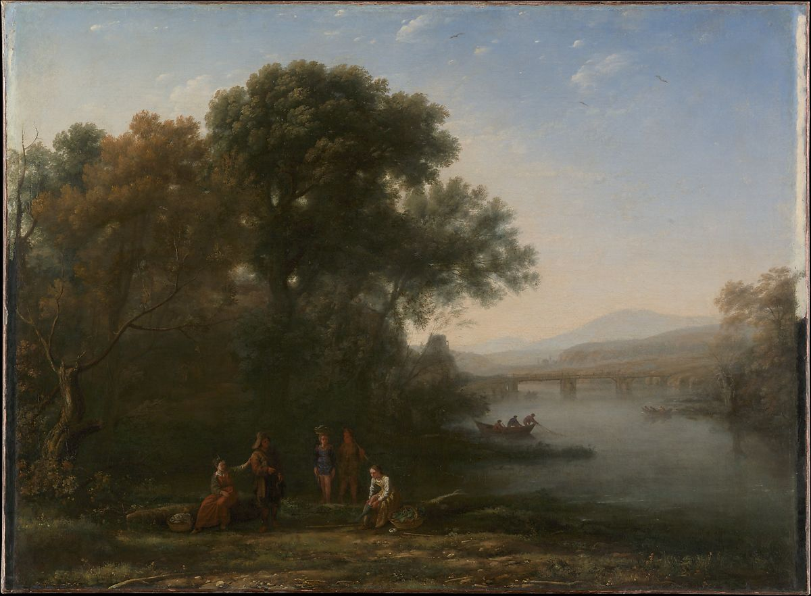

<head>
<meta charset="UTF-8" />
<meta name="keywords" content="drawing, painting" />
<meta name="description" content="drawings by Sunjy" />
<title>Sunjy</title>
<link rel="shortcut icon" type="image/x-icon" href="../../mImages/mCommon/favicon.ico" media="screen" />
<link rel="stylesheet" type="text/css" href="../../mCsses/mCommon/mCssA.css" />
<link rel="stylesheet" type="text/css" href="../../mCsses/mCommon/mCssB.css" />
<link rel="stylesheet" type="text/css" href="../../mCsses/mCommon/mCssC.css" />
<link rel="stylesheet" type="text/css" href="../../mCsses/mCommon/mCssD.css" />
<link rel="stylesheet" type="text/css" href="../../mCsses/mContent/mCssA.css" />
<link rel="stylesheet" type="text/css" href="../../mCsses/mContent/mCssB.css" />
<link rel="stylesheet" type="text/css" href="../../mCsses/mContent/mCssC.css" />
<link rel="stylesheet" type="text/css" href="../../mCsses/mContent/mCssD.css" />
</head>
<script type="text/javascript" src="../../mScripts/mContent/mContentAA.js" /></script>
<script type="text/javascript" src="../../mScripts/mContent/mContentAB.js" /></script>
<script type="text/javascript" src="../../mScripts/mContent/mContentAC.js" /></script>
<script type="text/javascript" src="../../mScripts/mContent/mContentAD.js" /></script>
<script type="text/javascript"></script> 
<script type="text/javascript">
document.write('<div class="mImgAbsolute"></div>');
/*
document.write('<p class="mFontSizeBColor" />From a white paper...</p>');
document.write('<table class="center"><tr><td>');
document.write('');
document.write('</td></tr></table>');
*/
</script>


<script type="text/javascript">
document.write('<p class="mFontSizeBColor" />The Ford</p>');
document.write('<p class="mFontSizeSColor" />By Claude Lorrain (Claude Gellee), possibly 1636. This picture is accurately recorded in Claude’s <i>Liber Veritatis</i>, the book of drawings the painter made to record his compositions and to protect himself against forgers and imitators. On the back of the drawing Claude noted that the picture was made for Paris, but the client is not named. In the eighteenth century, this painting belonged to Dr. Richard Mead, the famous collector in London. Then, it was called <i>Morning</i> and was paired with another Claude landscape entitled <i>Evening</i>, which had not been conceived as its pendant.  </p>');
document.write('<table class="center" /><tr><td>');
document.write('Liber Veritatis</i>, the book of drawings the painter made to record his compositions and to protect himself against forgers and imitators. On the back of the drawing Claude noted that the picture was made for Paris, but the client is not named. In the eighteenth century, this painting belonged to Dr. Richard Mead, the famous collector in London. Then, it was called <i>Morning</i> and was paired with another Claude landscape entitled <i>Evening</i>, which had not been conceived as its pendant.  " />');
document.write('</td></tr></table>');
</script>


